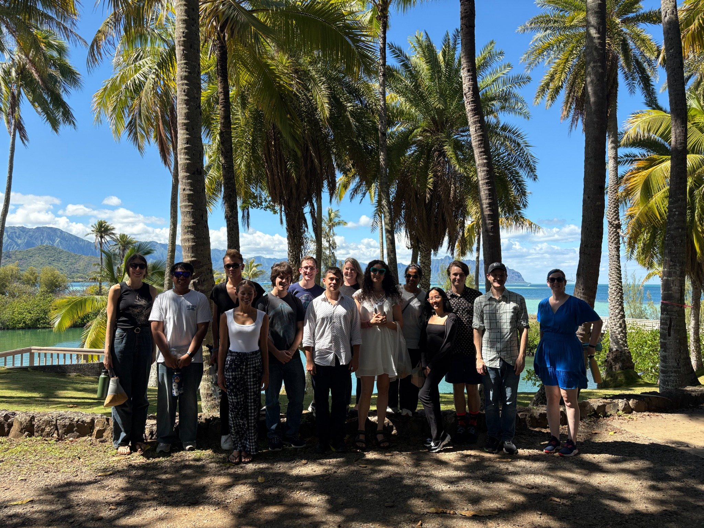

Building research spaces across mathematics and biology
A central part of my work is bringing people together around emerging research areas—through semester programs, workshops, minisymposia, graduate research communities, and collaborative working groups.
These activities connect algebraic statistics, applied algebraic geometry, evolutionary biology, ecology, chemical reaction networks, and graduate education.
Upcoming activities
UH Mānoa. A semester-long graduate research community on multigraded commutative algebra and toric geometry, led with Daniel Erman. Summer 2026Collaborate@ICERM
ICERM, Brown University. Collaborative research program supporting focused teams with computational and experimental components. July 2026FoCM 2026 speaker
Computational Algebraic Geometry workshop, Vienna. Invited speaker in a workshop highlighting symbolic, numerical, and applied algebraic geometry. July 6–10, 2026SIAM Annual Meeting
Cleveland, Ohio. Participating in the 2026 SIAM Annual Meeting. July 2026Minisymposium in Algebraic Biology
SIAM Annual Meeting. Minisymposium activity connecting algebraic methods with biological and ecological questions. May 17–22, 2026Chemical Reaction Networks in Hawaiʻi 2026
University of Hawaiʻi at Mānoa. Conference organized with Daniele Cappelletti, Jinsu Kim, Chuang Xu, and Polly Yu.
Some event pages may move as conference websites are finalized; links can be updated as public pages become available.
Recent past activities
Co-organized the Math-Bio Symposium at the Hawaiʻi Institute of Marine Biology and a minisymposium on algebraic methods for evolutionary biology and ecology at SIAM AG25.
Plenary speaker, SIAM Conference on Applied Algebraic Geometry, with a talk on computational algebraic geometry for evolutionary biology.
Organizer and semester participant for ICERM’s program on Theory, Methods, and Applications of Quantitative Phylogenomics.
Organized Algebraic Methods in Phylogenetics at UH Mānoa, a research workshop centered on projects for junior participants.
Organizer and visiting research associate for IMSI’s program on Algebraic Statistics and Our Changing World.
Organized Algebraic Statistics 2022 and the Workshop on Algebra of Phylogenetic Networks at UH Mānoa.
Selected organizing themes
Research communities
Graduate Research Communities in Hawaiʻi bring students together for sustained collaborative work, professional development, and mentoring.
Interdisciplinary mathematics
Workshops and conferences connect algebra, statistics, computation, ecology, evolutionary biology, and systems biology.
Place-based collaboration
Events at UH Mānoa use Hawaiʻi as a meaningful setting for building community, research networks, and student opportunities.
